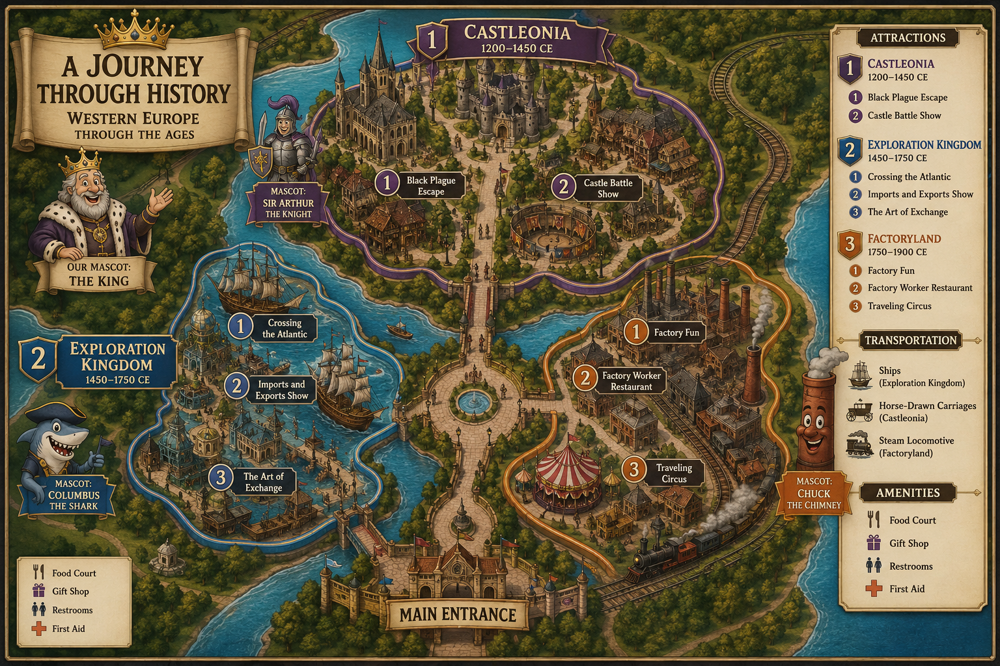

Chronicles Park
Three lands. Seven centuries. One kingdom of memory. Travel the medieval manor, sail the age of exploration, and ride the engines of industry — all in a single Western European theme park where every attraction is rooted in real history.
Why Western Europe?
Chronicles Park focuses on Western Europe, a region whose institutions, voyages, and machines reshaped the wider world. Each of our three Lands spotlights a single era so guests can feel how power, labor, and movement transformed from the manor to the factory floor.
Power & Structure
From the Catholic Church and feudal lords of the medieval manor, to the mercantilist monarchies of the age of sail, to the industrial empires of the 1800s — authority in Western Europe was constantly reorganized. Chronicles Park builds its Lands around these shifting structures.
Movement & Exchange
Goods, beliefs, people, and diseases never stopped moving: Hanseatic trade routes, the Columbian Exchange, and the migrations of the Industrial Revolution. Our transportation network turns that history of movement into how guests travel the park.
Work & Daily Life
Serfs and freemen gave way to artisans, then to factory laborers. Our attractions, food, and souvenirs are designed to show what everyday life actually looked like for the people who lived through each era.
One Park, Three Centuries Apart
Castleonia
Feudalism, the manorial system, the Catholic Church, and the Black Death.
Exploration Kingdom
Transoceanic connections, the Columbian Exchange, and mercantilist empires.
FactoryLand
The Industrial Revolution, steam power, and the new world of factory labor.
Choose Your Era
A flat, top-down model of Chronicles Park. The Royal Plaza sits at the center, with the three Lands arranged around it — each section clearly labeled with its specific attractions, mode of transportation, and mascot.

Built as a flat park model — the medium for our final product is this website.
The Age of Feudalism & Faith
We chose 1200–1450 CE because of the powerful influence that feudalism and the Catholic Church had on Western Europe. This period was crucial in building the political and social structures of the region, while major events such as the Black Death reshaped society. Power was decentralized: the Pope held religious and political authority across Europe, while feudal lords and nobility ruled small parcels of land called manors.
A Medieval Kingdom
Castleonia recreates a medieval European kingdom of stone castles, towering cathedrals, and bustling village markets. At its heart is a working manor that demonstrates the manorial system — farmland, a church, serf homes, and a castle for the ruler. The decentralized, feudal society of 1200–1450 CE is reflected in both the architecture and the everyday life on display.
Rides & Shows
Visitors are dropped into a medieval town with one objective: run and escape before the Black Plague — spreading visibly through the town walls — catches up to them.
Actors portray medieval battles using catapults, shields, and staged sword fights between knights.
Getting Around
Beyond walking paths, guests move through Castleonia by horse-drawn carriage — a genuine mode of medieval transport — or by pushing merchant carts, a nod to the many traders who moved goods through medieval towns and markets.
See all transport routes →Land Mascot — Sir Arthur the Knight
A friendly knight in shining armor carrying a sword and shield. Knights were among the most iconic figures of medieval Western Europe, embodying feudalism, loyalty, and chivalry — making Sir Arthur a perfect fit for Castleonia.
Meet all the mascots →Transoceanic Connections
We chose 1450–1750 CE because Western Europe dominated the era of transoceanic connections. The Columbian Exchange, the Age of Exploration, mercantilist empires, and breakthroughs in maritime technology were all led by Western European powers — the Spanish Empire, the Kingdoms of France and England, and the Dutch Republic among them.
An Ocean of Trade
Exploration Kingdom is built around a maritime, transoceanic theme — an ocean of trade dotted with ships and new inventions. Inspired by a world-showcase pavilion but reimagined with water at its center, the Land turns the importance of sea trade into its defining atmosphere.
Rides & Shows
A water-heavy voyage that carries riders through the experience of crossing the Atlantic, sailing past period ships and finally arriving in the Americas.
Guests watch how the great European empires traded to gain power and wealth, illustrating the logic of mercantilism.
A simulation-based ride that carries guests through the Columbian Exchange, living through the journey of someone caught up in it — complete with sharp turns and severe shaking to mimic falling ill.
Getting Around
Because this era is defined by the sea, the Land transports guests by ship. Travelers choose between a caravel or a carrack to sail to the rest of the park — the very vessels that powered European exploration.
See all transport routes →Land Mascot — Columbus the Shark
A fast, water-dwelling shark that nods to Christopher Columbus and the transoceanic connections of the Columbian Exchange. The shark fits the Land's water theme while marking it as a place of bold ocean voyages.
Meet all the mascots →The Engines of Industry
We chose 1750–1900 CE because of how rapidly industrialization spread across Western Europe. Abundant agricultural resources, growing trade markets from the previous era, and a wave of technological innovation allowed the Industrial Revolution to ignite — specifically in Britain — before diffusing across Western Europe and out into the rest of the world.
Life on the Factory Floor
FactoryLand centers on the social and economic realities of working life. Rides built around factories and machinery fill the Land, alongside attractions that show what it was like to live as a British family during this period — the good and the harsh alike.
Rides & Shows
Riders enter to "greet the boss," then climb upward past displays of the different jobs available to different skill sets — showing how specialized labor worked — before a fast drop surrounded by props depicting the occasional workplace injury.
A restaurant modeled on the kind of house factory workers and their families lived in. The main hall is a recreation of a massive dining room seating dozens of groups at once, surrounded by decor depicting the era's cramped, inadequate living conditions.
A circus featuring showcases of bravery and comedy throughout its performances.
Getting Around
FactoryLand moves guests by steam locomotive. As fossil fuels became the dominant energy source and James Watt's improved steam engine made rail possible, the locomotive became the era's great long-distance transport — now carrying guests across the park.
See all transport routes →Land Mascot — Chuck the Chimney
A friendly factory chimney. As steam-powered technology spread, chimneys multiplied across the industrial landscape to release steam and smoke into the air — making a chimney the most fitting symbol of FactoryLand.
Meet all the mascots →Beyond walking paths, each Land connects to the rest of Chronicles Park using a mode of transport drawn directly from its own era. Guests literally ride through history as they move from one Land to the next.
Horse-drawn Carriage
Carriages pulled by horses carried people across medieval Western Europe. Guests can also push merchant carts, echoing the traders who hauled goods between towns and markets.
Caravel & Carrack
In a Land built on the sea, guests sail between areas aboard a caravel or carrack — choosing their own vessel. These were the ships of European exploration and transoceanic trade.
Steam Locomotive
The steam locomotive — born from fossil fuels and James Watt's steam engine — was the era's dominant long-distance transport. It carries guests across the longest stretches of the park.
Transportation in Chronicles Park mirrors a true historical arc: from the animal-powered movement of the medieval world, to the wind-powered ships of the age of sail, to the fossil-fueled engines of industry. Crossing the park is itself a lesson in how Western Europe's movement of people and goods transformed over seven centuries.
Chronicles Park's food court traces how the Western European diet changed across our three eras — from hearty medieval fare, to the New World crops of the Columbian Exchange, to the preserved and imported foods of the industrial age.
Every souvenir in Chronicles Park is tied to the history of its Land. Browse keepsakes from the medieval kingdom, the age of sail, and the industrial revolution — each chosen because it reflects the technology, culture, or warfare of its era.
The King
The King
A crowned king who roams all three Lands. Kings were a constant across every era of Western European history, symbolizing power and status from the medieval monarchies through the imperial age. Because royal authority threads through all three time periods our park covers, the King unites the entire park as its overall mascot.
A Champion for Each Land
Tap any mascot to read the full historical reasoning.
Before designing the park, we researched three questions across our three eras. These comparisons are the historical backbone behind every Land, attraction, and souvenir in Chronicles Park.
Who Is In Charge?
Government, political systems, and leadership.
| Era | Who Holds Power |
|---|---|
| 1200–1450 | The Catholic Church and the Pope held both religious and political power across Europe. Feudal lords and nobility ruled small parcels of land called manors. |
| 1450–1750 | A range of monarchies and empires — the Spanish Empire, the Kingdom of France, the Kingdom of England, and the Dutch Republic. |
| 1750–1900 | The British Empire, French Empire, German Empire, and Russian Empire. |
Change & continuity: Authority shifted from the decentralized Church-and-manor system toward large centralized empires — yet imperialism and empire-building remained a constant feature throughout.
Who Is Working?
Labor systems, social classes, and the economy.
| Era | The Workforce |
|---|---|
| 1200–1450 | Rural workers — serfs, freemen, and enslaved people. |
| 1450–1750 | Still largely serfs and freemen, but artisanal workers began to emerge. |
| 1750–1900 | A massive shift from agricultural workers and artisans to industrial laborers in factory jobs — with some forced labor remaining. |
Change & continuity: The economy moved from agricultural production toward industrial production, but forced labor continued to make up a significant share of the workforce across the eras.
What Is Moving?
Trade, belief systems, people, and ideas.
| Era | What Crosses Borders |
|---|---|
| 1200–1450 | Goods moved mainly through Hanseatic League trade networks. Christianity spread across Western Europe, and the Crusades moved people, ideas, and technology across Eurasia. |
| 1450–1750 | The Columbian Exchange moved animals, food, and diseases from the Old World to the New. The printing press spread ideas rapidly. |
| 1750–1900 | The Industrial Revolution spread quickly across Western Europe. Mass migration to the Americas began, and ideas such as communism and capitalism emerged. |
Change & continuity: New technologies like steam ships and the astrolabe enabled the Age of Exploration and the discovery of the Americas — while regional trade within Europe and imperial demand for raw materials remained constant.
The websites and resources we consulted while researching Western Europe and designing Chronicles Park.